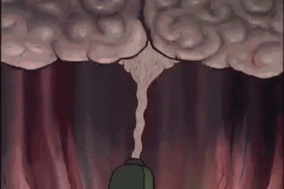
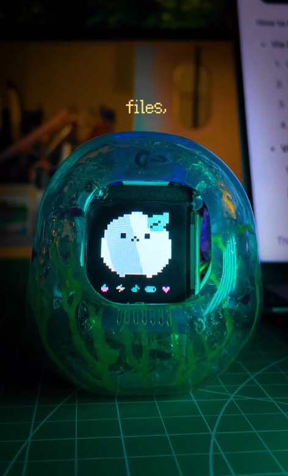
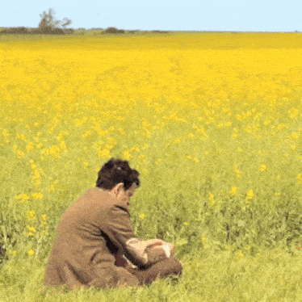
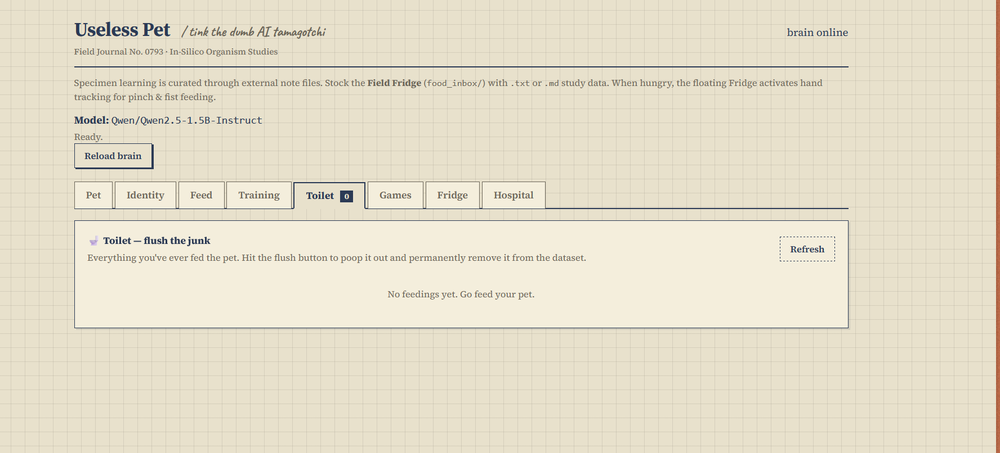

The honest build log: late starts, big ideas, downloads that took forever, and one tiny creature that learned to eat.
HOUR 01idea
Three hours late, then the brain finally started
I forgot the program was today and showed up three hours late. No fear though—I started thinking, and after a very long time an idea arrived: make a dumb AI like a pet. We have to teach it everything it needs to know, and feed it or it dies.

the brain, eventually, did a thing
it only took being late by three hours
HOUR 02research
“I don't know how to make it” 😭
Yep. That was the situation. But I wasn't giving up. I watched videos, looked at ways to put a LoRA adapter on a small language model, and installed the files I thought I would need.
me, learning the hard way
Somewhere in the design ideas, the pet got a name: YEMI. It means something that eats a lot—unlike me. If YEMI doesn't eat, it will die, so please take care of it.

one of the early design inspirations
HOUR 03brain
Giving my dumb PC an AI brain
I installed a small LLM and started writing the program around it. Then came the waiting. So much waiting.
waiting for the model download
bruhhhhh!!!! it is taking so long

still waiting
HOUR 04hardware
YEMI gets ears and touch
Now for the hardware: I connected an ESP32 and servos for the ears. Touching the sensor can control and comfort the pet. At this point it was becoming real.
HOUR 05bug
I made a dumb AI. It was really dumb.
I wanted it to be silly like me, but it became so dumb that it did not know what I was even saying. It would just poop things out. Time to fix it.
the accurate debugging mood

see? now I have to fix it
7 HOURS LEFTcamera
The webcam can see my hand now
Yes—the webcam could track my hand. It worked, but there were still lots of problems: transparency, preview cleanup, and plenty of little things to polish.
6 HOURS LEFTfridge
The golden fridge finally works
I fixed the fridge and the webcam. Now it works well—just a little touch-up left.
Within five hours, I also changed the UI completely. I used Codex to make a mini interactive fridge page, wrote the working notes, and fed that to Antigravity to help make it run.
4 HOURS LEFTface
YEMI opens its eyes
I finished making the eye display for the ESP32. An open-source program helped convert video into ESP32 OLED code, which made this part much easier.
2 HOURS LEFTdone!
After a long time, everything worked
You heard me right—it worked. Now I can sleep well. YEMI is cute, funny, and very hungry.